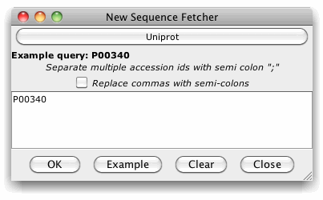

Sequence Fetcher
Jalview can retrieve sequences from certain databases using either the DBFetch service provided by the EMBL European Bioinformatics Institute, or, since Jalview 2.4, DAS servers capable of the sequence command (configured in DAS settings).
The Sequence Fetcher dialog box can be opened via the "File" menu on the main desktop in order to retrieve sequences as a new alignment, or opened via the "File" menu of an existing alignment to import additional sequences. There may be a short delay when the sequence fetcher is first opened, whilst Jalview compiles the list of available sequence datasources from the currently defined DAS server registry.
First, select the database you want to retrieve sequences from by clicking the button labeled 'Select database retrieval source'. If a database source is already selected, then the button's label will change to show the currently selected database.

Since Jalview 2.8, the available databases are shown as a tree in a popup dialog box. The databases are ordered alphabetically, and if there are many sources for the same type of sequence identifier, they will be grouped together in a sub-branch branch labeled with the identifier.
Once you have selected the sequence database using the popup dialog box, enter one or more accession ids (as a semi-colon separated list), or press the "Example" button to paste the example accession for the currently selected database into the retrieval box. Finally, press "OK" to initiate the retrieval.
Fetching from The PDB with the EMBL-EBI PDBe Search Interface
Since Jalview 2.9, selecting PDB as the sequence database will open the PDB Sequence Fetcher for discovering and retrieving structures.
Only retrieving part of a sequence
DAS sources (indicated by a "(DAS)") allow a
range to be specified in addition to a sequence ID. To retrieve 50
residues starting at position 35 in UNIPROT sequence P73137 using
the UNIPROT DAS server, you would enter "'P73137:35,84'.
Full support for DAS range queries was introduced in
Jalview 2.8
If you use the WSDBFetch sequence fetcher services (EMBL, Uniprot, PFAM, and RFAM) in work for publication, please cite:
Pillai S., Silventoinen V., Kallio K., Senger M., Sobhany S., Tate
J., Velankar S., Golovin A., Henrick K., Rice P., Stoehr P., Lopez
R.
SOAP-based services provided by the European
Bioinformatics Institute.
Nucleic Acids Res. 33(1):W25-W28
(2005)